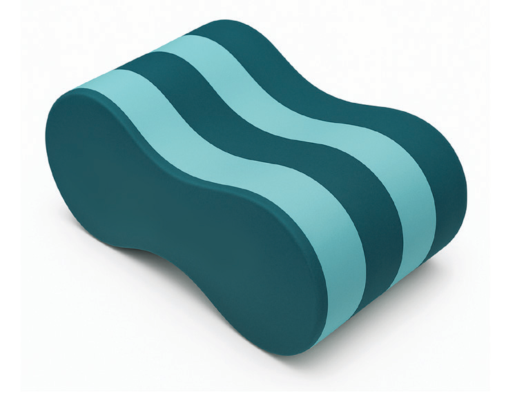
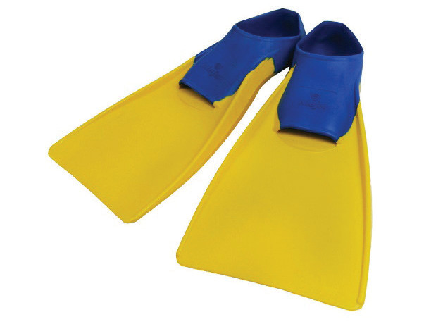

Fins
Fins are devices worn on the feet to enhance speed and improve kicking technique, Figure 3.8. Fins help increase propulsion through the water, allowing swimmers to develop more powerful kicks while reducing fatigue. They also help improve leg strength and flexibility, making them an essential tool for training kick mechanics.

Hand paddles
Hand paddles are flat, rigid plastic devices worn on the hands during swimming to increase resistance and strengthen arm strokes, Figure 3.9. By increasing surface area, they provide more resistance, helping swimmers to build arm strength and improve stroke technique. Hand paddles are especially useful for swimmers working on speed, and endurance in swimming strokes.